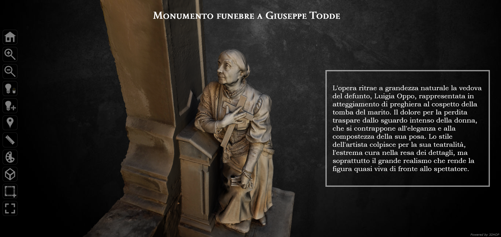

Giuseppe Maria Sartorio è stato uno dei maggiori esponenti della scultura funeraria italiana tra fine XIX e inizio XX secolo. Nato a Boccioleto (Vercelli) nel 1854, nonostante l'opposizione dei genitori, frequenta prima una scuola di intaglio, prosegue poi la sua formazione all'Accademia Albertina di Belle Arti a Torino, e poi a Roma all'Accademia di S.Luca. Resosi molto conosciuto ed apprezzato in Piemonte, trova però la sua fortuna soprattutto in Sardegna: suo è il monumento a Quintino Sella nell'ominima piazza di Iglesias, ma realizza capolavori anche per il Camposanto Monumentale di Bonaria a Cagliari e numerosi altri certi sardi quali Sassari, Ozieri, Buggerru, Cuglieri. L'apice della carriera lo raggiunge nel 1899, quando gli viene commissionato il monumento a Vittorio Emanuele II dallo stesso re Umberto I, collocato a Sassari, in Piazza d'Italia. Ma è proprio all'acmè del suo successo che viene colto da una tragica quanto misteriosa morte, avvenuta nel 1922, quando il Sartorio scompare dal piroscafo diretto a Roma in cui si trovava; il suo corpo non è mai stato rinvenuto, e 23 anni dopo è stata dichiarata la sua "presunta" morte.
Se si percorre il viale a sinistra subito dopo l'ingresso del cimitero di Bonaria, si incontra uno dei maggiori capolavori del Sartorio: si tratta del monumento funebre a Giuseppe Todde, economista e giurista di Villacidro, docente alle Università di Cagliari e Sassari e infine rettore a Cagliari, che commissionò l'opera tre anni prima di morire, nel 1894. A colpire non è tuttavia il busto che ritrae il destinatario del monumento, bensì l'elegante figura ai suoi piedi: si tratta di Luigia Oppo, moglie del defunto. L'opera è stata voluta in questa forma proprio dalla signora Oppo, la quale, dopo aver letto su un giornale locale dell'epoca che il monumento funebre più bello presente allora nel cimitero cittadino era quello a Vittorio Raspi (opera del 1881, dove è rappresentata la moglie del Raspi a figura intera che porta una corona di fiori al busto del marito), volle la realizzazione di un'opera non meno spettacolare.
La signora Oppo morì ben 21 anni dopo il marito, per cui per tutti quegli anni le persone che si recarono in cimitero poterono vedere sia la signora in carne ed ossa che la sua versione in marmo.
La realizzazione del modello 3D è stata fatta utilizzando la tecnica della fotogrammetria: per via delle dimensioni dell'opera si è deciso di fare un'acquisizione parziale, che riprende solamente la figura di Luigia Oppo e parte della tomba. Il modello è reso fruibile tramite interfaccia web che tra le varie funzionalità permette di fare zoom, modificare l'illuminazione, fare misurazioni, screenshot e ingrandire su alcuni "hotspot" specifici accompagnati da una breve descrizione.
created with
WYSIWYG Web Builder .